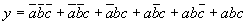

1. Answer the following questions about a 4M ´ 8 SRAM IC:
2. Draw a diagram showing how to construct a 16M ´ 16 memory system using the SRAM ICs designed in Question 1.
3. Minimize the following function, either algebraically or using a Karnaugh Map. Show all work.

4. Draw the gates to implement your answer to Question 3.
5. Show how to build an AND gate using NOR gates.
6. Use a multiplexor with two control inputs to implement the equation given in Question 3. Draw the multiplexor as a box, and label all inputs and outputs to this box.
7. Draw the gates to implement a decoder with three inputs. Label all inputs and outputs.
8. Answer the following questions about a PLA that has 8 inputs, 16 AND gates, and 6 OR gates:
9. Answer the following questions about a 64 K ´ 12 PROM:
10. Draw all the gates that make up the 1-bit ALU designed in the textbook. Use the following names for the inputs: F0, F1, INVA, A, ENA, B, ENB, Carry In. Use the following names for the outputs: Carry Out, Result.
11. Write the logic equation for the carry into the 4th position (C4) of a 64 bit parallel adder using carry lookahead logic.
12. Draw all the gates to implement the answer to Question 11. Do not try to draw the gates for C0 through C3, but do draw the gates for all the generate and propagate values.
13. Give the values of the six control inputs to a parallel ALU built from the units designed in Question 10 so that it will compute the following values:
14. Draw the gates to implement an unclocked latch using NOR gates.
15. Draw the gates to implement a positive edge-triggered D flip-flop.
16. Draw a timing diagram for a clocked R-S latch that has four clock pulses. The first pulse is to put the latch in the reset state, the second one is to leave it unchanged, the third one is to put it in the set state, and the last one is to reset it again.
17. Answer the following questions about tristate gates: